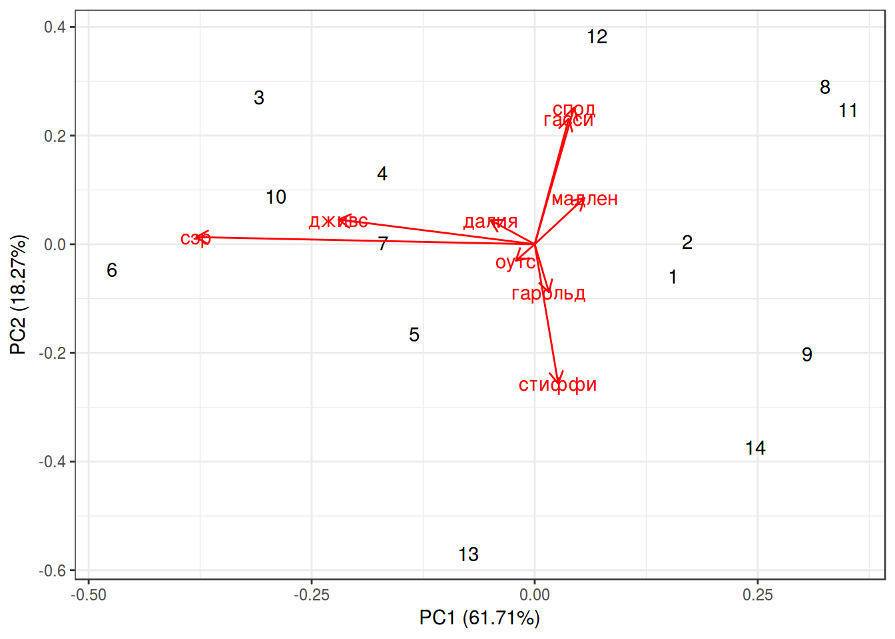

- Уменьшение размерности: PCA
Г. Мороз
1. Введение
Метод главных компонент (PCA, Principal Component Analysis) применим к числовым данным, в которых строчки — это точки наблюдения, а столбцы — это исследуемые переменные. Данный метод часто приводят и используют как метод уменьшения размерности, однако я разделяю мнение, согласно которому это лишь метод смены перспективы, в результаты которого некоторое количество размерностей становится маловажными.
1.1 Библиотеки
library(tidyverse)1.2 Фамильная честь вустеров
В данной лекции я буду использовать данные из романа П. Г. Вудхауза “Фамильная честь Вустеров”. В датасете собраны несколько переменных:
- chapter — номер главы
- гарольд — частотность появления имени в каждой из глав
- гасси — частотность появления имени в каждой из глав
- далия — частотность появления имени в каждой из глав
- дживс — частотность появления имени в каждой из глав
- мадлен — частотность появления имени в каждой из глав
- оутс — частотность появления имени в каждой из глав
- спод — частотность появления имени в каждой из глав
- стиффи — частотность появления имени в каждой из глав
- сэр — частотность появления имени в каждой из глав
wodehouse <- read.csv("https://goo.gl/Qux1gS", sep = "\t")
library(GGally)
ggpairs(wodehouse[,-1])+
theme_bw()
2. Дисперсия, ковариация, корреляция Пирсона
\[var(X) = \frac{\sum_{i = 1}^n(x_i - \bar{x})^2}{n - 1}\]
\[cov(X, Y) = \frac{\sum_{i = 1}^n(x_i - \bar{x})(y_i-\bar{y})}{n - 1}\]
cov(wodehouse[,-1])## гарольд гасси далия дживс
## гарольд 2.386168e-06 -2.889885e-06 -1.460862e-06 -3.189492e-06
## гасси -2.889885e-06 1.547471e-05 -2.408293e-07 -4.003681e-06
## далия -1.460862e-06 -2.408293e-07 9.538701e-06 1.032326e-05
## дживс -3.189492e-06 -4.003681e-06 1.032326e-05 3.876272e-05
## мадлен -1.186985e-06 5.782058e-06 -3.263335e-06 -8.873167e-06
## оутс 4.253683e-07 -2.740335e-06 3.656516e-07 4.847624e-07
## спод -3.171558e-06 1.192382e-05 -1.587378e-06 -4.324372e-06
## стиффи 5.852747e-06 -8.472296e-06 -5.377545e-06 -5.558223e-06
## сэр -4.022204e-06 -8.049261e-06 9.348602e-06 5.202877e-05
## мадлен оутс спод стиффи
## гарольд -1.186985e-06 4.253683e-07 -3.171558e-06 5.852747e-06
## гасси 5.782058e-06 -2.740335e-06 1.192382e-05 -8.472296e-06
## далия -3.263335e-06 3.656516e-07 -1.587378e-06 -5.377545e-06
## дживс -8.873167e-06 4.847624e-07 -4.324372e-06 -5.558223e-06
## мадлен 6.637573e-06 -8.894871e-07 4.458108e-06 -3.836640e-06
## оутс -8.894871e-07 2.221350e-06 -1.978200e-06 1.259601e-07
## спод 4.458108e-06 -1.978200e-06 2.287974e-05 -4.867900e-06
## стиффи -3.836640e-06 1.259601e-07 -4.867900e-06 2.222599e-05
## сэр -1.253736e-05 6.519538e-06 -8.919541e-06 -5.673706e-06
## сэр
## гарольд -4.022204e-06
## гасси -8.049261e-06
## далия 9.348602e-06
## дживс 5.202877e-05
## мадлен -1.253736e-05
## оутс 6.519538e-06
## спод -8.919541e-06
## стиффи -5.673706e-06
## сэр 9.960665e-05\[cor(X, Y) = \frac{cov(X, Y)}{\sigma_X\times\sigma_Y}\]
cor(wodehouse[,-1])## гарольд гасси далия дживс мадлен
## гарольд 1.0000000 -0.47557473 -0.30620632 -0.33163769 -0.2982566
## гасси -0.4755747 1.00000000 -0.01982227 -0.16347111 0.5705142
## далия -0.3062063 -0.01982227 1.00000000 0.53686514 -0.4101214
## дживс -0.3316377 -0.16347111 0.53686514 1.00000000 -0.5531805
## мадлен -0.2982566 0.57051424 -0.41012138 -0.55318053 1.0000000
## оутс 0.1847592 -0.46739478 0.07943545 0.05224121 -0.2316469
## спод -0.4292365 0.63369266 -0.10745096 -0.14520796 0.3617599
## стиффи 0.8036716 -0.45683480 -0.36932510 -0.18936434 -0.3158754
## сэр -0.2608972 -0.20502203 0.30328984 0.83732159 -0.4875926
## оутс спод стиффи сэр
## гарольд 0.18475920 -0.4292365 0.80367163 -0.2608972
## гасси -0.46739478 0.6336927 -0.45683480 -0.2050220
## далия 0.07943545 -0.1074510 -0.36932510 0.3032898
## дживс 0.05224121 -0.1452080 -0.18936434 0.8373216
## мадлен -0.23164689 0.3617599 -0.31587536 -0.4875926
## оутс 1.00000000 -0.2774829 0.01792643 0.4382926
## спод -0.27748290 1.0000000 -0.21586665 -0.1868413
## стиффи 0.01792643 -0.2158666 1.00000000 -0.1205847
## сэр 0.43829256 -0.1868413 -0.12058465 1.00000003. Собственный вектор, собственное значение
Как вы знаете матрицы можно перемножать. Подсказка.
{kind=link}
m1 <- matrix(c(2, 2, 3, 1), nrow = 2)
m2 <- matrix(c(1, 3), nrow = 2)
m3 <- matrix(c(3, 2), nrow = 2)
m1## [,1] [,2]
## [1,] 2 3
## [2,] 2 1m2## [,1]
## [1,] 1
## [2,] 3m1 %*% m2## [,1]
## [1,] 11
## [2,] 5m1## [,1] [,2]
## [1,] 2 3
## [2,] 2 1m3## [,1]
## [1,] 3
## [2,] 2m1 %*% m3## [,1]
## [1,] 12
## [2,] 8В первом примере мы получили матрицу \(\left(\array{11\\ 5}\right)\), а во втором случае \(\left(\array{12\\ 8}\right) = 4 \times \left(\array{3\\ 2}\right)\), т. е. при умножении матрицы мы получили значение, равное скалярному умножению той же самой матрицы.
Мы можем думать об одной матрице, как о векторе \(\left(\array{3\\ 2}\right)\) в двумерном пространстве. Тогда матрица \(\left(\array{2 & 3\\ 2 & 1}\right)\) — это матрица некоторой трансформации А, которая изменяет вектор \(\left(\array{3\\ 2}\right)\). В таком случае собственный вектор (eigenvector) — это тот постянный объект, который подвергается трансформации, а собственное значение (eigenvalues) — это скалярный мультипликатор собсвтенного вектора (в нашем случае собственное значение равно 4).
Свойства собсвтенных векторов:
- собственные векторы можно найти только для квадратных матриц (и то не для всех)
- все собственные векторы матрицы перпендекулярны друг другу вне зависимости от размерности.
- принято задавать собственные векторы длинной 1, так что найдя собственный вектор \(\left(\array{3\\ 2}\right)\), мы узнаем его длинну \[\sqrt{3^2+2^2} = \sqrt{13},\] так что теперь можно отмасштабировать вектор: \[\left(\array{3\\ 2}\right) \times \frac{1}{\sqrt{13}} = \left(\array{3/\sqrt{13}\\ 2/\sqrt{13}}\right)\]
Как найти собственный вектор в R:
m <- matrix(c(2, 2, 3, 1), nrow = 2)
eigen(m)## eigen() decomposition
## $values
## [1] 4 -1
##
## $vectors
## [,1] [,2]
## [1,] 0.8320503 -0.7071068
## [2,] 0.5547002 0.7071068Собственные значения в переменной values функция всегда возвращает в убывающем порядке, а каждая колонка в переменной eigenvectors соответствует элементу в переменной values. Сравните со значениями, которые мы получили руками:
3/sqrt(13)## [1] 0.83205032/sqrt(13)## [1] 0.55470024. PCA
Обычно переменные, которые используют в PCA нужно обязательно нормализовать, но так как мы будем использовать частотность, эти переменные не нуждаются в нормализации. Давайте сравним результат работы функций, которые мы рассмотрели перед этим и функции prcomp.
eigen(cov(wodehouse[,-1]))## eigen() decomposition
## $values
## [1] 1.356038e-04 4.015202e-05 1.845105e-05 1.246263e-05 6.075232e-06
## [6] 4.352082e-06 1.855247e-06 6.550470e-07 1.265038e-07
##
## $vectors
## [,1] [,2] [,3] [,4] [,5]
## [1,] 0.03548428 0.19663999 -0.075686879 -0.03368713 0.05890242
## [2,] 0.08477226 -0.51351224 -0.134539726 0.05377012 0.65708710
## [3,] -0.11013760 -0.09840259 0.388433965 -0.43335718 -0.21220875
## [4,] -0.48849572 -0.10100883 0.148787895 -0.57991681 0.28388407
## [5,] 0.12377778 -0.18961709 -0.020354106 0.32039042 0.22010871
## [6,] -0.04712363 0.06751616 -0.004473342 0.20678545 -0.34253505
## [7,] 0.09814424 -0.55844483 -0.599469737 -0.29899851 -0.45659562
## [8,] 0.05838698 0.56967373 -0.609313517 -0.30930782 0.24922420
## [9,] -0.84274152 -0.02915765 -0.268496830 0.37601904 -0.05266838
## [,6] [,7] [,8] [,9]
## [1,] 0.14492413 0.11925658 0.73875236 0.60725660
## [2,] 0.43845894 0.19560719 0.10480039 -0.18673960
## [3,] 0.65127401 -0.36616001 -0.12101985 0.14696227
## [4,] -0.43803831 -0.09265465 0.27430311 -0.19087430
## [5,] -0.20367150 -0.85162955 0.09852740 0.14404733
## [6,] 0.21240113 -0.13343752 0.55755002 -0.67773786
## [7,] -0.09036398 -0.03379965 0.04752482 0.09847218
## [8,] 0.20775743 -0.24593603 -0.12571229 -0.15350747
## [9,] 0.18108076 -0.01233863 -0.12141653 0.15810530PCA <- prcomp(wodehouse[,-1])
PCA## Standard deviations (1, .., p=9):
## [1] 0.0116449044 0.0063365624 0.0042954683 0.0035302457 0.0024647985
## [6] 0.0020861643 0.0013620747 0.0008093498 0.0003556737
##
## Rotation (n x k) = (9 x 9):
## PC1 PC2 PC3 PC4 PC5
## гарольд 0.03548428 -0.19663999 0.075686879 -0.03368713 0.05890242
## гасси 0.08477226 0.51351224 0.134539726 0.05377012 0.65708710
## далия -0.11013760 0.09840259 -0.388433965 -0.43335718 -0.21220875
## дживс -0.48849572 0.10100883 -0.148787895 -0.57991681 0.28388407
## мадлен 0.12377778 0.18961709 0.020354106 0.32039042 0.22010871
## оутс -0.04712363 -0.06751616 0.004473342 0.20678545 -0.34253505
## спод 0.09814424 0.55844483 0.599469737 -0.29899851 -0.45659562
## стиффи 0.05838698 -0.56967373 0.609313517 -0.30930782 0.24922420
## сэр -0.84274152 0.02915765 0.268496830 0.37601904 -0.05266838
## PC6 PC7 PC8 PC9
## гарольд 0.14492413 0.11925658 0.73875236 0.60725660
## гасси 0.43845894 0.19560719 0.10480039 -0.18673960
## далия 0.65127401 -0.36616001 -0.12101985 0.14696227
## дживс -0.43803831 -0.09265465 0.27430311 -0.19087430
## мадлен -0.20367150 -0.85162955 0.09852740 0.14404733
## оутс 0.21240113 -0.13343752 0.55755002 -0.67773786
## спод -0.09036398 -0.03379965 0.04752482 0.09847218
## стиффи 0.20775743 -0.24593603 -0.12571229 -0.15350747
## сэр 0.18108076 -0.01233863 -0.12141653 0.15810530Как читать полученное? Мы сменили оси координат и в новом пространстве (точно так же 9-мерном) мы можем перейти используя полученные значения:
\[PC1 = гарольд \times 0.03548428 + гасси \times 0.08477226 + далия \times -0.11013760 + дживс \times -0.48849572 +\] \[ + мадлен \times 0.12377778 + оутс \times -0.04712363 + спод \times 0.09814424 + стиффи \times 0.05838698 + сэр \times -0.84274152\]
Как полученные компоненты объясняют дисперсию в переменных?
summary(PCA)## Importance of components:
## PC1 PC2 PC3 PC4 PC5 PC6
## Standard deviation 0.01164 0.006337 0.004295 0.00353 0.002465 0.002086
## Proportion of Variance 0.61713 0.182730 0.083970 0.05672 0.027650 0.019810
## Cumulative Proportion 0.61713 0.799860 0.883830 0.94055 0.968190 0.988000
## PC7 PC8 PC9
## Standard deviation 0.001362 0.0008093 0.0003557
## Proportion of Variance 0.008440 0.0029800 0.0005800
## Cumulative Proportion 0.996440 0.9994200 1.0000000Т. е. первые две компоненты объясняют почти 80 процентов дисперсии, это достаточно высокое значение, которое позволяет нам применять данный метод.
Дальнейшая визуализация возможна благодаря пакету ggfortify:
library(ggfortify)
autoplot(PCA,
shape = FALSE,
loadings = TRUE,
label = TRUE,
loadings.label = TRUE)+
theme_bw()
Числа на этом графике — номера глав романа, красные линии — оси старых осей координат. Сам график называется биплот. Чем ближе друг к другустарые оси координат, тем больше скоррелированы переменные (вообще, косинус угла между ними равен коэфициенту корреляции между соответствующими переменными).
5. Что дальше?
- После того как преобразование сделано можно запскать стандартные методы регрессии, кластеризации и т. д.
- можно использовать некоторые не затронутые в PCA переменные, для анализа в новом пространстве
7. Евангелия
gospels <- read.csv("https://goo.gl/mdBVVe")